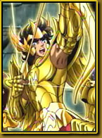

最新更新
- 《圣斗士》代班女神 (正剧+番外)
- [10-18]· [同人] 儿时的英雄撒加
- [09-17]·《圣斗士》代班女神(正剧+番外)
- [08-16]·《圣斗士星矢 极乐净土篇》正式启动！
- [07-15]· [下载]《圣斗士冥界篇 后章》DVD-RIP珍藏版3
- [06-14]· [同人] 永恒的星光
- [05-13]· [周边] 典雅气质智慧女神,龙马精神紫龙星矢
- [04-12]· [杂谈] 冥界篇后章之叹息的墙壁
- [03-11]· [同人] 圣斗士同人:庆祝迪斯生曰快乐！
圣斗士漫画
- ·《冥王神话TLC》第42话：降临
- ·《冥王神话TLC》第41话：恸哭
- ·《冥王神话TLC》第40话：孤独
- ·《冥王神话TLC》第39话：无效
- ·《冥王神话TLC》第37,38话：黑色
- ·《冥王神话TLC》第36话：凶战士
- ·《冥王神话TLC》第35话：巨星
- ·《冥王神话TLC》第34话：流转
专题企划 精美周边
 万众期待的大作《圣斗士星矢冥界篇后章》终于在网络上出现中文字幕版， 本站提供HTTP/FTP方式免费下载。 不同网段的网友可选择使用网通、电信或者广州E家宽专用线路下载。目前下载已全面开放。本站提供的冥界篇动画下载均为PPX字幕组的RMVB版本。更多《冥界篇》资讯可关注本专区以及冥界篇区的更新内容。
- 典雅气质智慧女神，龙马 精神紫龙星矢
- 教皇再临！“圣衣神话” 冥衣史昂详介
- [03-18]· 典雅气质智慧女神,龙马精神紫龙星矢
- [04-17]· 二度奢华!“圣衣神话”专用支架B套问世
- [05-15]· 教皇再临！“圣衣神话”冥衣史昂详介
- [06-14]· 海魔女登场!“圣衣神话”暑期新品三则
- [07-13]· 正邪两面!水晶战士“圣衣神话”新图发表
- [08-12]· 最终天马“圣衣神话”胸像分解欣赏
- [09-11]· 冥衣史昂登场!“圣衣神话”完全新品三则
影音下载
- 《圣斗士冥界篇 后章》 DVD-RIP珍藏版3-4话
- [03-15]·《圣斗士冥界篇 后章》DVD-RIP珍藏版1-2话
- [03-15]·《圣斗士冥界篇后章》DVD特典2《黄金档案2
- [03-15]· 预热!《圣斗士冥界篇 后章》清晰版预告篇
- [03-15]·《圣斗士冥界篇 后章》第1-2话字幕版下载
- [03-15]·《圣斗士冥界篇后章》DVD特典1《黄金档案》
- [03-15]·《冥界篇 后章》第5-6话正式字幕版下载
- [03-15]·《冥界篇 后章》第3-4话字幕版下载
- [03-15]·《冥界篇 后章》第1-2话字幕版下载
圣域快报
- ·《圣斗士星矢 极乐净土篇》正式启
- · 黄金最终集结!《冥界篇》DVD3华
- ·《冥界篇 后章》第5-6话情报汇总,
- ·《冥界篇 后章》第5、6话收视指南
- · 赤裸裸炫耀!《冥界篇》动画游戏
- · 12黄金齐聚!《冥界篇》大结局官
- ·《冥界篇 后章》第3-4话字幕版下
- ·《冥界篇 后章》第3-4话情报更新
热血美图
- 神圣衣！ 两位女神现真身
- 梦旅人圣迷社 圣斗士COS第二弹
- 正义与邪恶！ 梦旅人圣迷社·圣斗士经典
- 《圣斗士》庆生 系列特辑活动专场